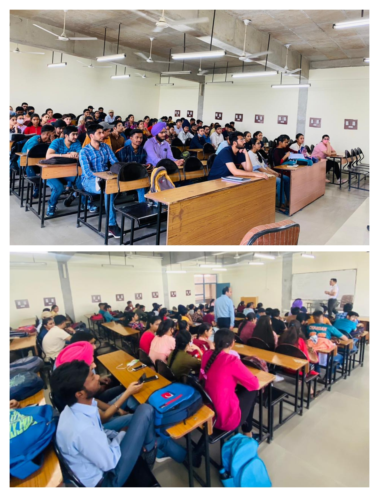
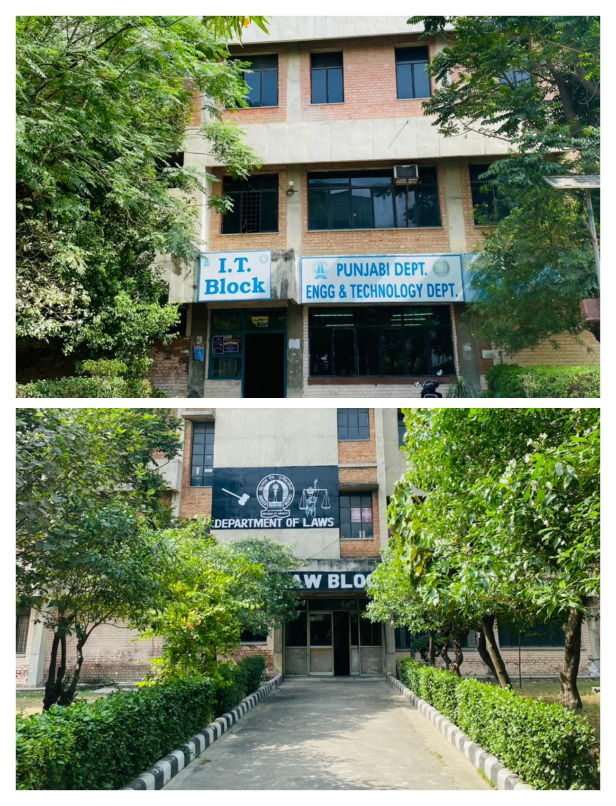

Our Campus
Positive & Friendly Environment

Big Classroom

High-tech Labs

Guru Nanak Dev University was established at Amritsar on November 24, 1969 to mark the 500th birth
anniversary of Sri Guru Nanak Dev Ji
It is both a residential and an affiliating university.
Come and learn from Best
Positive & Friendly Environment
Learn, Enjoy & Explore
Lets Study
Lets Play
Lets Explore
Life changing experience
College life where moments become memories to cherish for life... Talking about my college life at Guru Nanak Dev University, Regional campus Jalandhar it was full of learning and grooming oneself I got to participate in various technical and co-curricular events which boosted my confidence and improved my interpersonal skills. In this period of 4 years I was able to explore and learn so many new things from well-learned people which also expanded my professional network to a great extent. GNDU, RC Jalandhar provides up to par infrastructure with good classroom facilities, well-equipped labs and a dedicated library for I.T block students. Placement Department here is diligent, they manage to get excellent job opportunities from companies like Nagarro, Infosys, Unthinkable, Amdocs etc. The faculties here are highly qualified, knowledgeable. They believe in learning by doing which helped me to gain in-depth knowledge.

I just want to express my gratitude and respect for this institution.ln the four years the institution has literally moulded me as an individual and shaped my value system have made a lot of good friends. The teachers have guided me extremely welt The memories will always be fresh in my mind and this institution will always be very dear and has a deep place inside my heart.As a sports and cultural enthusiast this institution has given me an ocean of opportunities. And most importantly Gndu's prestigious stage has given me the confidence and courage to take on the life ahead
Know More About Admission
{kind=link}